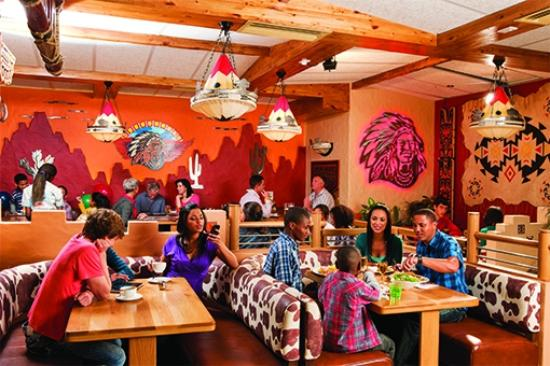

Nothing brings people and families together like sharing a great meal in a warm and friendly environment. Generous portions, great service and a friendly vibe where everyone is welcome; that is what Spur’s about and that’s what has made it South Africa’s favourite family restaurant.
Since 1967, when founder and executive chairman, Allen Ambor, opened the Golden Spur in Newlands, Cape Town, Spur Steak Ranches have been part of the South African family. In the years since then, Spur has helped to create countless special memories and earned a reputation for mouth-watering, value-for-money meals.
Spur Steak Ranches has grown into an internationally recognised brand with over 284 local and 36 international restaurants in countries like Australia, New Zealand, Mauritius, and various parts of Africa.
The menu offers something for everyone – from the legendary steaks, ribs and burgers, to their famous Cheddamelt schnitzels, delicious desserts and special Kids’ Meals. Their weekday specials offer fantastic value-for-money deals, such as the Unreal Breakfast and Classic Monday R55 Burger.
Spur also prides itself as a restaurant for the whole family, catering for the needs of kids. This include a full Kids’ Menu, an exciting Kids’ Play Area (with climbing walls, jumping castles and X-Boxes at selected restaurants), the Secret Tribe Loyalty Club, spectacular Kids’ Birthday Parties (including a Birthday Party Combo Meal), activity sheets and fun digital applications, specifically aimed at the children’s market – Spur Tribe Dash, Spur Colour Me 3D and Spur Birthday Jam – to keep the kids entertained for hours.
Friends, family, kids, business partners – bring them all and create memories with people with a taste for life!
